MINISTRO DO ALTÍSSIMO
- Logo no primeiro domingo que passou
MINISTRO DO ALTÍSSIMO
- Logo no primeiro domingo que passou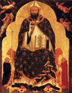
em Hipona, foi à Igreja a fim de participar da Santa Missa.MINISTRO DO ALTÍSSIMO
- Logo no primeiro domingo que passou
O Bispo Valério, que era o celebrante, na homilia falou sobre a escassez de sacerdotes e a necessidade premente de serem formados novos padres, para o atendimento a catequese, as obras sociais, difusão do cristianismo, celebrações dos atos litúrgicos e um melhor apostolado no seio de toda a comunidade.
Algumas pessoas reconhecendo Agostinho dentro da Igreja apontaram para ele e interromperam o sermão do Bispo, dizendo em voz alta:
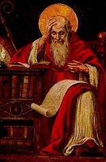
Ele quis fugir, mas não deixaram.
Realmente foi um meio muito estranho de se fazer um sacerdote. Todavia, sua eleição foi prontamente confirmada pelo Bispo. Posteriormente Dom Valério pessoalmente incumbiu-se de ensinar-lhe os ritos para a celebração de Missas e uso dos Sacramentos, uma vez que a parte doutrinária, ele conhecia profundamente.
Consegue em Hipona uma área de terra com uma pequena casa, para onde transferiu o Mosteiro de Tagaste.
Cheio de disposição e santos ideais, com seus
companheiros aumentou e melhorou a construção, permanecendo isolado do mundo,
escrevendo livros e opúsculos, estudando e pesquisando profundamente a doutrina
cristã, como demonstração 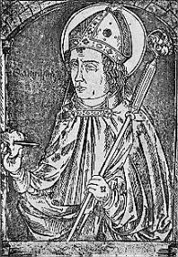
Com o passar dos anos, o Bispo Valério sentindo o peso da idade, pensou em conseguir um Bispo Auxiliar para ajudá-lo na diocese e substituí-lo no momento oportuno. Aproveitando a ocasião de uma solenidade religiosa, com o apoio de Aurélio Bispo primaz de Cartago, elegeu Agostinho Bispo Auxiliar de Hipona.
Para ele foi outra grande surpresa e anos mais tarde, com a morte de Valério, assumiu o Episcopado, tornando-se Bispo de Hipona.
A verdade é que a mão de Deus apontava na direção dele, fazendo-o Pastor e vigoroso defensor de um imenso rebanho, contra as heresias que pululavam naquela época.
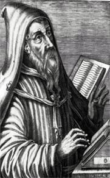
Depois foi a vez dos Donatistas. Foi uma luta árdua e cheia de tramas por parte do adversário, que também foi derrotado. E por fim, enfrentou e derrotou os Pelagianos, que durante 18 anos espalharam sua heresia por todas as partes.
Ao mesmo tempo em que exercia esta notável
atividade, desdobrava-se incansavelmente em suas funções, não se esquecendo
do rebanho cristão, corrigindo abusos e distorções, aumentando consideravelmente
o número de Padres e leigos dispostos a ajudá-lo no apostolado, e ainda, encontrando
tempo para continuar com seus escritos. Sempre que falava em DEUS, liberava 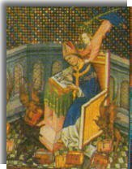
“Que amo eu quando VOS amo?â€
“Não amo a formosura corporal, nem a glória temporal, nem a claridade da luz tão amiga
destes meus olhos, nem as doces melodias das canções de todo o gênero, nem o suave
cheiro das flores, dos perfumes ou dos aromas, nem o maná ou o mel, nem os membros
tão flexíveis aos abraços da carne. Nada disto amo, quando amo o meu DEUS. E contudo,
amo uma luz, uma voz, um perfume, um alimento e um abraço, quando amo o meu DEUS.
Luz, voz, perfume e abraço do homem interior, onde brilha para a minha alma uma luz
que nenhum espaço contém, onde ressoa uma voz que o tempo não arrebata, onde
se exala um perfume que o vento não esparge, onde se saboreia uma comida que a
sofreguidão não diminui, onde se sente um contato que a saciedade não desfaz.
Eis o que amo, quando amo o meu DEUSâ€.

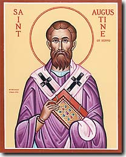OBRA LITERÁRIA E SUA MORTE
- Pela sutileza na maneira de escrever, por ter-se
Ao todo escreveu 93 obras que contam 232 livros. Escreveu ainda um número incontável de cartas e pronunciou uma quantidade incalculável de sermões.
Sua obra mais profunda, foi o "Tratado da Santíssima Trindade", em que apresenta o Mistério de DEUS de maneira a oferecer uma visão do mesmo, ao entendimento da humanidade.
Existe uma lenda que fala das suas preocupações e do seu dedicado interesse em querer descobrir o Mistério Divino da Santíssima Trindade.
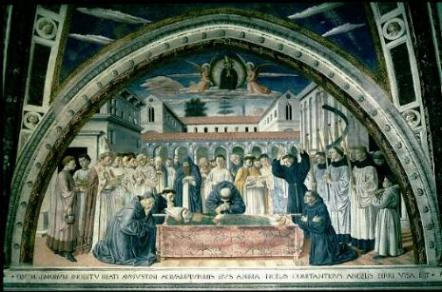
Eis que em dado momento, abaixando os olhos, vê na praia uma linda criança com uma conchinha na mão trazendo água do mar e colocando-a num pequeno buraco que tinha feito na areia da praia!
Aproximou-se e carinhosamente perguntou-lhe
o que estava fazendo. A criança 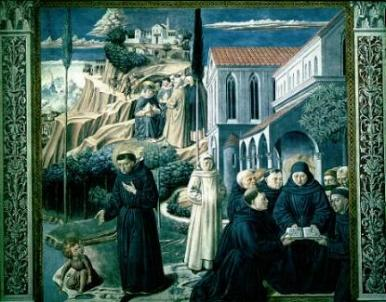
"Estou tentando colocar toda a água do mar neste buraco".
Homem sagaz e inteligente, percebeu que aquela resposta era um recado de DEUS para a sua intensa curiosidade.
A mente humana não tem capacidade, é pequena e com pouco merecimento, para conhecer e compreender o conteúdo e a beleza do Grande Mistério de DEUS.
Escreveu também "Confissões", que conta à história de sua vida e de sua conversão; a "Cidade de DEUS†onde descreve a invasão de Roma pelos bárbaros de Alarico. Apesar de africano de nascimento, tinha o coração latino e ninguém sofreu mais do que ele, ao conhecer a grandeza daquele impiedoso massacre e a terrível devastação que os bárbaros impuseram ao Império Romano, que chegava ao fim, por culpa das depravações internas, pelo enfraquecimento da obediência à autoridade e pela falta de responsabilidade e honra, de seus próprios filhos.
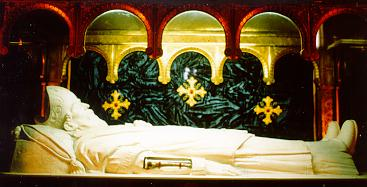
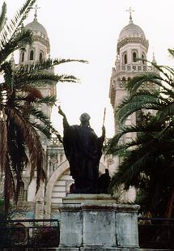
Sem dúvida, Agostinho foi um exemplo raro de inteligência em toda a história do cristianismo. Era um pensador profundo, que em todos os temas que abordou, imprimiu um cunho especial de seu gênio. Seus escritos, as suas obras, chegaram até nossos dias, cheias de vigor e atualizadas, como se tivessem sido escritas agora. Em cada frase, em cada pensamento, sente-se o pulsar de um coração cristão, verdadeiramente apaixonado, com batidas cadenciadas e firmes, manifestando o seu imenso Amor a DEUS. Uma de suas frases ficou inesquecível porque interpreta com fidelidade uma espontânea e sincera manifestação de seu coração:
"Ó beleza sempre antiga e sempre nova. Tarde te amei".
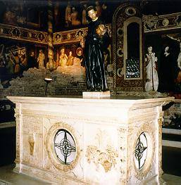
Além de sua notável literatura, escreveu também uma "Regra" para os seus companheiros de ideal.
Em diversas partes do mundo, obedecendo a esta Regra, congregaram-se homens e mulheres, formando um grande número de Ordens e Congregações Religiosas, que levam o seu nome. As principais são:
AGOSTINIANOS ASSUNCIONISTAS; ORDEM DOS AGOSTINIANOS RECOLETOS; ORDEM DE SANTO AGOSTINHO; ORDEM DOS AGOSTINIANOS DESCALÇOS
CANONIZAÇÃO
- Agostinho, como a grande maioria dos Santos antigos, não teve um processo para a sua
canonização. Da mesma forma que não cursou um Seminário para se tornar sacerdote
e foi aclamado pelo povo: "Agostinho Padre"
, foi também, desde a antiguidade, considerado Santo pelos fieis
e pelas autoridades eclesiásticas, por sua preciosa Obra, por sua admirável conversão
e pela inquestionável santidade.
FIM

AS FOTOGRAFIAS ACIMA: As 6 primeiras imagens focalizam o próprio Santo;7) Imagem após a morte, velado pelos seus discípulos; 8) Imagem que focaliza diversas passagens da vida do Santo, mostrando na parte de baixo, ele e a criança da "lenda" mencionada acima; 9) Relíquia na Catedral de Annaba (antiga Hipona), na Algéria; 10) Estatua em Annaba, defronte a Catedral; 11) Relíquia na Igreja de S. Nicolau.